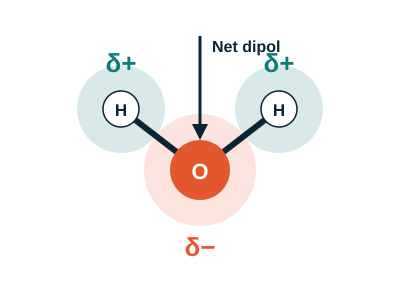

Bölüm 4 · Kutupluluk
Su: küçük ama güçlü bir molekül
Su molekülü neden birçok maddeyi çözebilir? Cevap, bağ elektronlarının eşit paylaşılmamasında gizli.

Oksijen, bağ elektronlarını hidrojenden daha güçlü çeker. Bu nedenle oksijen üzerinde kısmi negatif yük (δ−), hidrojenlerde ise kısmi pozitif yük (δ+) oluşur. Yük ayrımı olan bu duruma kutupluluk denir.
Elektronegatiflik değerleri (Pauling ölçeği) bu farkı açıklar: O = 3,44, H = 2,20. Aradaki fark büyüdükçe bağ daha kutupludur.
Su molekülü açısal olduğu için kısmi yükler birbirini dengelemez; molekül kutupludur. Buna karşılık karbondioksit doğrusaldır: C=O bağlarının kutupları birbirini dengeler ve molekül apolar kalır.
Beş molekül, iki sınıf
| Molekül | Şekil | Polarlık | Neden? |
|---|---|---|---|
| H2O | Açısal | Polar | Kısmi yükler birbirini dengelemez |
| NH3 | Piramit | Polar | Yalnız elektron çifti yükü bir yöne kaydırır |
| CH4 | Dörtyüzlü | Apolar | Simetrik; yükler birbirini götürür |
| CO2 | Doğrusal | Apolar | İki C=O kutbu zıt yönde dengelenir |
| O2 | Doğrusal | Apolar | İki aynı atom; yük ayrımı yoktur |
Su, molekülleri arasında oluşan hidrojen bağları sayesinde hem yüksek kaynama noktasına sahiptir hem de birçok maddeyi çözebilen bir çözücüdür.